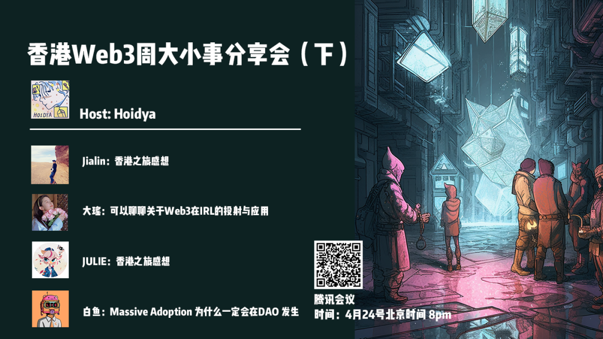
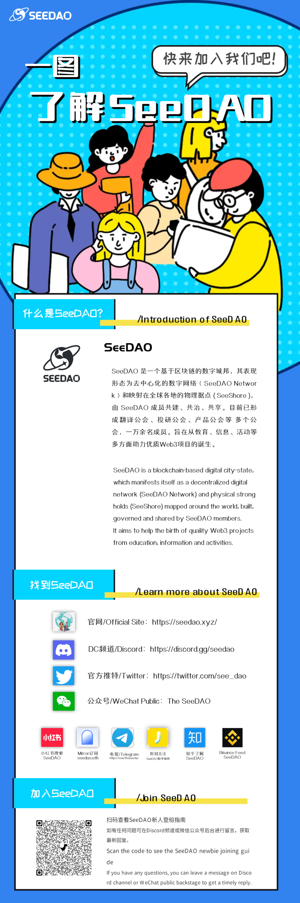

2023 年 4 月，香港举办了 web3 嘉年华，web3 各方齐聚香港，开展各种工作坊、路演等活动。在此 web3 周之后，我们举办了线上交流会，邀请亲身参与香港活动的小伙伴分享香港活动里的那些新鲜事儿。

Web3 关于生产关系，AI 关于生产力。AI 以一个生产力或者说生产者的角色去提供很多的内容，但是中间的一些资本化过程，包括怎么去分配这些利益，没有办法通过 AI 直接进行。Web3 是一个途径来实现这个资本化的过程，起到桥梁作用。
关于香港嘉年华周的见闻：
去香港的目的：为项目 BD 更多资源；作为 marketer 出身，对好的项目的关注。香港活动爆火，如果想要有所收获可能需要优化参会策略。有针对性地组一些小局，交流可以更深度一些。
香港参会的一些趣事分享：凌晨5点半爬太平山，探秘老书店之行。借爬山经历的讲述，讨论运动背后的深度社交。
在参会之余，探到老爷爷开的老书店，在方寸之间看各种老书。
观点：从外部环境，内部发展来看都会出现mass adoption
外部：地缘政治差异越来越大，crypto 是国与国之间的东西
内部：web3很多人意识到可以做很多事情；开发者现在诞生了很多模块式工具辅助开发者；dao的形式越来越成熟，像seedao也有自己的os，用户以后可以把seedao当做是一个app，下载之后可以做任何事情。
去年 11-12 月发现的需求，现在 web3 群体缺乏一个信息聚合的平台，引发了对 IRL（in real life）的思考。在未来 web3 大体量的活动需求趋势下，可以联合有着相似用户画像的品牌去共享权益。目前手上有一些免费的场地提供商，当需要线下场地/共享空间时，可以跟场地提供商，给特定组织提供权益。
更多观点讨论，更多故事细节，请查看分享会回放。
香港Web3周大小事分享会 上 （视频建议WIFI网络收看）
香港Web3周大小事分享会 下 （视频建议WIFI网络收看）
内容来源：白烨林
